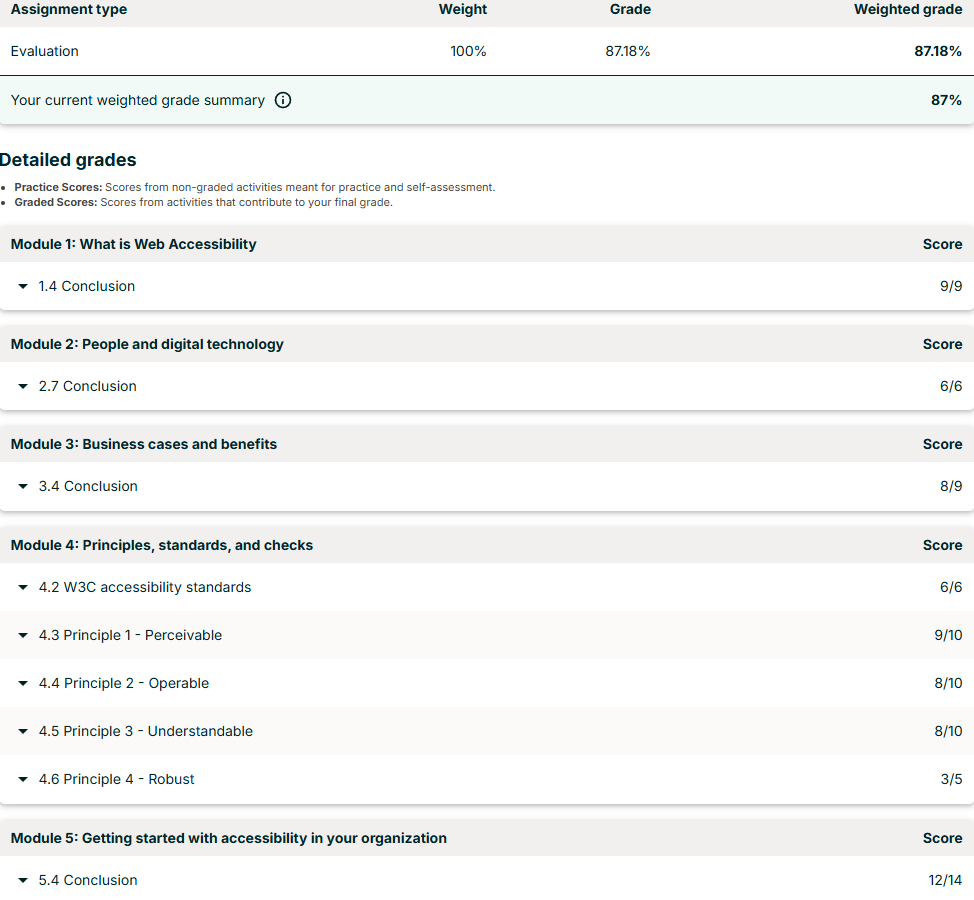
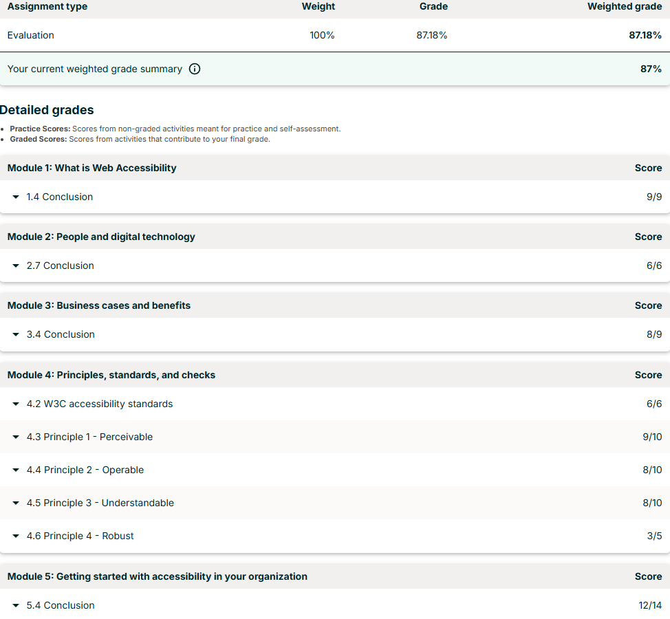

Event 10: W3Cx Introduction to Web Accessibility
Date: 26/06/2025
Summary
This is a course offered by the World Wide Web Consortium (W3C) through EdX, focussing on considerations and experiences of people with disabilities. The W3C is the main international standards organisation for the world wide web, including accessibility standards. It was quite interesting to me because a lot of the focus was on reframing how one views disabilities, and it does that by showing you many examples where a non-disabled person might be the disadvantaged one. This drills home the point that a lot of the issues people with disabilities have is just by design catering to societal norms. Most of the rest of the course was focussed on how to actually implement and manage accessibility in the workplace, as well as teaching what the standards are.
Additional Comments
Unfortunately it costs $100 to get the certificate so I don't have one for this course (kept badgering me about it during the course as well, which is a little concerning).
I enjoyed how they shifted the focus to people rather than the disabilities themselves. There were quite a few ‘gotcha’ moments and questions that were meant to make you realise that you don’t view disabilities in the right way, which felt a little tedious at points, but I appreciated the general message. My takeaway from the standards part of the course is that a lot of work has been done, but a lot is still required. Many of the standards and ways of making technologies accessible are dependent on the other technologies that are available to assist, such as screen readers and the like. I kept having the thought that AI could be so useful here, especially when they were discussing that assistive technologies can’t help deciphering images and instead require explicit text to explain what the image is. That is exactly something we actually have a solution for now! Obviously nothing related to my specific disability either but it is clearly a process, and I’m sure we’ll get there eventually.
Links
Evidence
 
